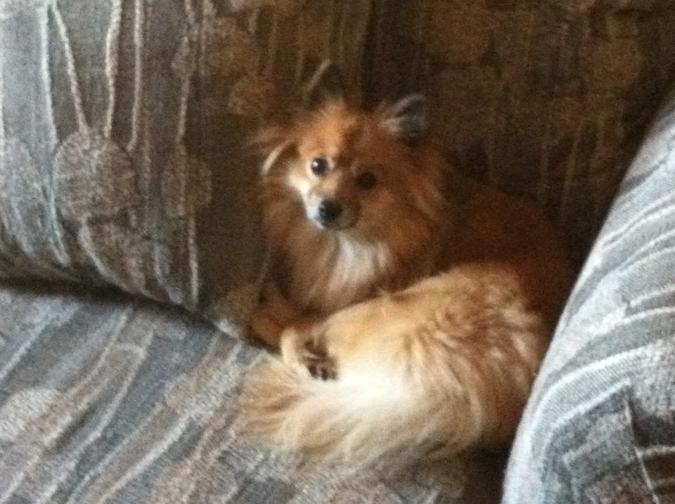
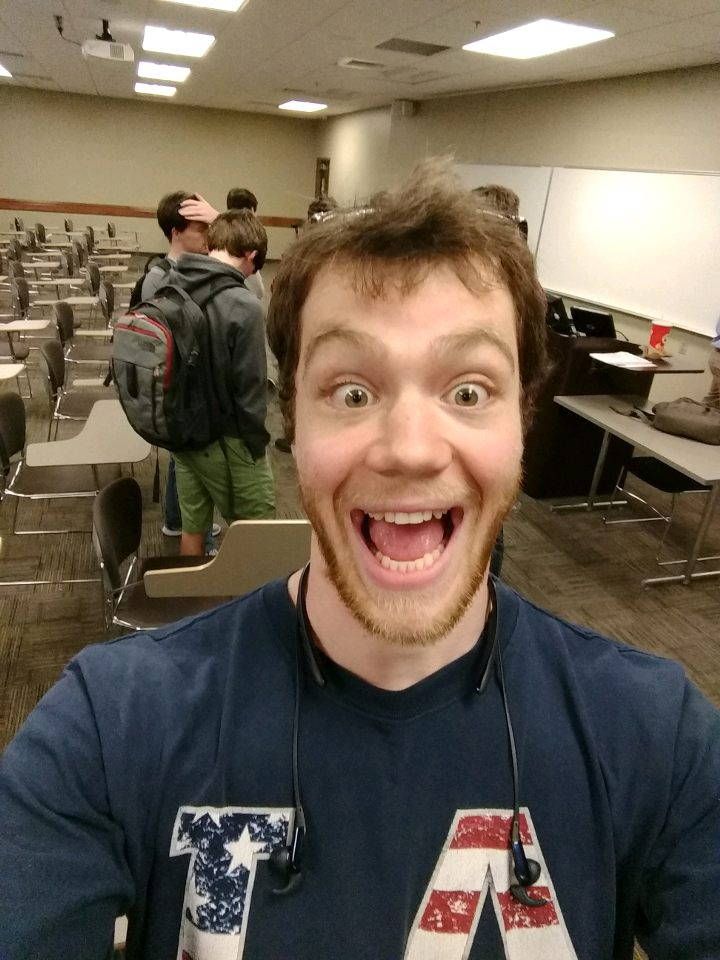

Joshua Collins

Hi there! My name is Josh Collins, and I’m from Knoxville, TN. I’m a 21 year old Computer Science and Mathematics double major at the University of Alabama with a knack for database and security related field work. Outside of my passion for technology, I absolutely love music. Every year I attend the Bonnaroo Music Festival in Tennessee, as well as the Lollapalooza Music Festival in Chicago. In keeping with that theme, it is a Sunday night tradition between my roommate and I that we spend the night listening to records and having a glass of bourbon as we prepare for the week ahead. I also have a 3 year old dog, named Katara, and she is the absolute love of my life. When not in classes, her and I are usually out having adventures at the dog park or enjoying local restaurants and venues together downtown. I believe in three core values, which are to surround myself with great people, set high goals, and work hard to succeed.
Kenya Foster
Senior student, Major: Computer Science. Minor: Japanese. Graduating December 2018. Mostly eats oreos and looks at pictures of cute dogs.
Nicholas Chadwick

Nick Chadwick is a senior CS student who does not resemble a fish. He enjoys watching Spongebob, taking long walks along the banks of Lake Lurleen, and playing ARK.
Nathan Brinda
Senior student in the Capstone Project CS495 course. Majoring in Computer Science. Graduating May 2018. Enjoys playing soccer and weight lifting.
Liam Treutel
Liam Treutel is also a senior. Even more surprisingly, he is a student at the University of Alabama and -- this may shock you -- he is also taking the CS495 course. He can knit, and he hopes to one day own a corn snake.